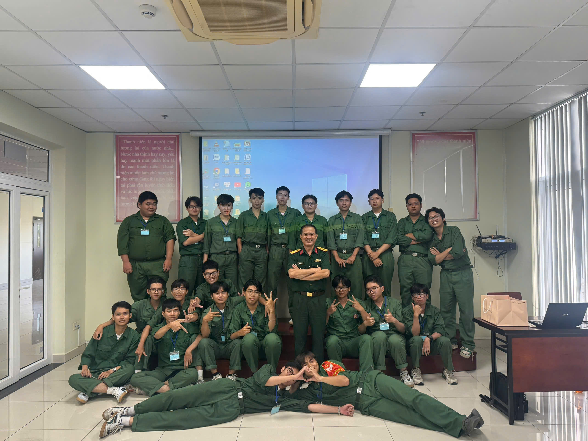

now playing
Track 01 — Một chút yên lặng
Dành cho những lúc mình không muốn nói nhiều.
00:42
03:15
[ THE ARCHIVE SPACE ]
chương 01
Không phải playlist nào cũng cần phát ra âm thanh. Có những “bài nhạc” chỉ tồn tại trong đầu, được bật lên vào những lúc mình cần yên tĩnh.
“Có những cảm xúc không cần nói ra, chỉ cần để chúng phát thật khẽ.”
now playing
Dành cho những lúc mình không muốn nói nhiều.
chương 02
VISUAL // AMVMột góc lưu lại những thước phim mình từng thích, những nhân vật từng khiến mình dừng lại lâu hơn một chút. Không cần quá sâu xa, chỉ là vài khoảnh khắc nhìn thôi cũng thấy vui.
chương 03
Có những điều mình chưa từng sống qua, nhưng lại từng tưởng tượng rất rõ. AI biến những mảnh cảm xúc ấy thành hình ảnh, thành câu chuyện, thành một thế giới mà trước đây chỉ tồn tại trong đầu mình.
chương 04
Bộ sưu tập những khoảnh khắc đời thường, những góc nhìn tĩnh lặng được đóng khung qua lăng kính cá nhân.

Mọi thứ rồi sẽ trở thành kỷ niệm, chỉ là sớm hay muộn.
chương 05
Nếu bạn đã đi đến đây, có lẽ cũng có điều gì đó muốn gửi lại. Một câu ngắn, một cảm xúc nhỏ, hoặc chỉ đơn giản là vài dòng bạn muốn để trong khoảng lặng này.